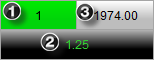

|
<< Click to Display Table of Contents >> Position Display |


|
Position Display
|
<< Click to Display Table of Contents >> Position Display |
|
The current selected account and instrument's position will be reflected directly on the Order Entry window with the following information:
1.Position Quantity and Direction Display
2.PnL (Profit and Loss) Display
3.Average Entry Price Display

The image above shows that we are in a 1 Long position, with an Average Entry Price of 1974.00, and that our current open PnL is 1.25 points.
Tip: If you are trading using multiple ATM Strategies, it is possible to reconfigure the position display to only display the position of the current selected ATM Strategy. Please see our Help Guide section on ATM Strategy Selection mode for more information.
 Understanding Position Quantity and Direction Display
Understanding Position Quantity and Direction Display
Position InformationThe current number of contracts in position will be displayed as a number in the position display. The direction of the position will be also represented in a highly visual manner: •When not in a position, the text display will say "Flat" without a color •Long positions will be reflected by a Green background color •Short positions will be reelected by a Red background color |
 Understanding Average Entry Price Display
Understanding Average Entry Price Display
Average Entry PriceWhen in a position, the Average Entry Price Display will show you the current price which is being used to calculate your open PnL. As you scale in and scale out of position at different prices, your Average Entry Price will be recalculated to reflect the new average price. The way this is calculated is set under the Trading category of NinjaTrader's general options menu.
|
Profit and LossThe PnL Display can be easily switched between Currency, Percent, Points, Pips, Ticks and None (hides your PnL). There are two ways to configure the PnL Display:
1.Single left clicking on the PnL Display itself will cycle between each display mode (with the exception of "none") 2.Right clicking on the order entry feature and selecting Properties will allow you to select the PnL display unit property directly You can also configure the PnL Display to show you your selected account's Realized PnL for the current trading session when not in a position. To enable this feature, right click on the order entry feature, select Properties, and check Show realized PnL when Flat.
|